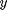

Contents
% Copyright 2015, Ashwin Srinath, All Rights Reserved <<<<<<< HEAD % LICENSE: MIT ======= % LICENSE: MIT (http://opensource.org/licenses/MIT) >>>>>>> master % (TL;DR) % You can do whatever you want % with this code % as long as you include the original copyright % and license in their original sources. % I don't guarantee that % any of this code % serves any purpose whatsoever. <<<<<<< HEAD
Introduction
In this document, we'll learn about Vectors and Matrices, the fundamental types of data in MATLAB
Vectors
So far, we have used MATLAB to compute with numbers, i.e., scalars:
a = 2*5*sin(pi/4); =======
Introduction
In this document, we'll learn about Vectors and Matrices, the fundamental ways to organize data in MATLAB
Vectors
So far, we have used MATLAB to compute with numbers, i.e., scalars:
a = 2*5*sin(pi/4); >>>>>>> master b = log(a); disp(b)
1.9560
You shouldn't be too impressed with any of this, it's nothing we can't do with an ordinary calculator. The true power of MATLAB lies in its ability to operate on vectors. Here's how to create a vector:
temp = [14, 21, 27, 32, 37, 37, 34, 27]; disp(temp)
14 21 27 32 37 37 34 27
Vectors are created by putting a list of comma-separated values in square brackets. In our example, we assign our vector to the name temp (the rules for vector assignment are the same as for scalars). We then inspect the value of temp using disp. MATLAB gives us a pretty representation of our vector.
Vectors are useful for a lot of different things. For instance, they can be used to hold a bunch of related values, e.g., readings from an experiment, student grades, patient heights, etc., Incidentally, our vector, temp, holds Google's prediction for the minimum temperature for the next eight days (that's why we named it temp!)
We can get the length or "size" of a vector, using length:
length(temp)
ans =
8
Having our values in a vector is really useful. We can compute the mean temperature:
mean(temp)
ans = 28.6250
And even the maximum or minimum
max(temp)
ans =
37
min(temp)
ans =
14
We can even visualize how the minimum temperature will vary:
plot(temp)
We hope you're convinced that MATLAB is a bit more useful than your average calculator! But lets move on and learn more about vectors:
Accessing Vector Values
As we discussed, we can create vectors by putting comma-separated values in square brackets:
temp = [14, 21, 27, 32, 37, 37, 34, 27];
We often want to access specific values of a vector. For instance, let's say we want only the temperature on the third day:
temp(3)
ans =
27
Here, 3 is called an index.
And don't forget, you can assign the extracted value to a variable:
temp_third = temp(3); disp(temp_third)
27
You can also change the value you access. Let's say we made a mistake in recording the temperature for the third day, to fix it:
temp(3) = 30.0;
Remember, in commands like this, we're not assigning the value on the right to a new name, we're modifying an existing variable. This is also valid (and extremely useful!) use of the assignment (=) operator.
We can also get vector values for a range of indices. For this, we use the colon (:) operator For instance, if we wanted the temperatures for days 2 through 6:
temp(2:6)
ans =
21 30 32 37 37
The answer is, of course, a vector. It's a "slice" of our original vector temp.
The end keyword is useful when we want to refer to the last index. Examine how end is used in the following commands:
temp(end)
ans =
27
temp(4:end)
ans =
32 37 37 34 27
Finally, you can provide a stride to the range of indices. For instance, if we want every second temperature from day 1 to day 7, we can do
temp(1:2:7)
ans =
14 30 37 34
or if we want every third temperature from day 1 to day 8:
temp(1:3:8)
ans =
14 32 34
The middle index is a stride or step. The indices (1:3:8) can be read as "1 through 8 in steps of 3"
Strides can be negative also, and useful when we want to get values "backwards". Here is how to get the temperatures from day 6 to day 2, backwards:
temp(6:-1:2)
ans =
37 37 32 30 21
To compare, here are the "forward" values:
temp(2:6)
ans =
21 30 32 37 37
Sequences
Here's an example of how we've been constructing vectors so far:
v = [1.2, 3.2, 7.6, 8.8];
Often, we want to generate a sequence of numbers. For examaple, if we want the sequence 1,2,3,4,...10, we can do:
seq = 1:10; disp(seq)
1 2 3 4 5 6 7 8 9 10
Note that this usage of the colon (:) operator here is different from the previous section. Make sure you understand this difference before moving on.
Of course, we don't have to start with 1:
seq = 2:8; disp(seq)
2 3 4 5 6 7 8
And our sequence can have a stride:
seq = 2:4:20; disp(seq)
2 6 10 14 18
And, yes, strides can be negative:
seq = 18:-5:-10; disp(seq)
18 13 8 3 -2 -7
We can even generate sequences of floating-point ("decimal") numbers:
seq = 0.5:0.2:2.5; disp(seq)
Columns 1 through 7
0.5000 0.7000 0.9000 1.1000 1.3000 1.5000 1.7000
Columns 8 through 11
1.9000 2.1000 2.3000 2.5000
seq = 1.0:-0.1:0; disp(seq)
Columns 1 through 7
1.0000 0.9000 0.8000 0.7000 0.6000 0.5000 0.4000
Columns 8 through 11
0.3000 0.2000 0.1000 0
Row and Column Vectors
Vectors can be "long" or "tall". So far, we've been working with "long" vectors:
yoshi_times = [22.2, 21.7, 23.4, 32.6, 18.0]; disp(yoshi_times)
22.2000 21.7000 23.4000 32.6000 18.0000
We can also create "tall" vectors:
koopa_times = [22.4; 23.6; 24.4; 20.9; 19.0]; disp(koopa_times)
22.4000 23.6000 24.4000 20.9000 19.0000
We can switch between "long" and "tall" vectors using the transpose (') operator:
disp(yoshi_times')
22.2000 21.7000 23.4000 32.6000 18.0000
The length of yoshi_times and yoshi_times' is the same:
length(yoshi_times)
ans =
5
length(yoshi_times')
ans =
5
But they have different sizes:
size(yoshi_times)
ans =
1 5
size(yoshi_times')
ans =
5 1
"Long" vectors are called row vectors, and "tall" vectors are called column vectors. Remember, columns (in architecture), are "tall". They are both specific cases of matrices, which we will study in the following section.
Matrices
So far, we've dealt with scalars (single numbers), and vectors (a collection of scalars):
yoshi_times = [22.2, 21.7, 23.4, 32.6, 18.0]; koopa_times = [22.4, 23.6, 24.4, 20.9, 19.0];
yoshi_times and koopa_times record the lap times of "yoshi" and "koopa" in a five-lap race.
We can "stack" these timings like so:
race_times = [yoshi_times; koopa_times]; disp(race_times)
22.2000 21.7000 23.4000 32.6000 18.0000 22.4000 23.6000 24.4000 20.9000 19.0000
What we get is a sort of "table" of numbers. The first row is koopa_times and the second is yoshi_times. This "table" is called a matrix. Let's check it's size:
size(race_times)
ans =
2 5
MATLAB reports the "size" of a matrix as [rows, columns]. The first number indicates the number of rows, and the second indicates the number of columns.
Accesing Matrix Values
To experiment with matrices, let's create a "magic matrix of 10 rows and 10 columns":
M = magic(10);
As with vectors, we often want to extract a single value from a matrix. We do this by supplying two indices:
M(2, 4)
ans =
14
The above command selects the value sitting on the second row and fourth column of our matrix
We can also extract an entire row of values:
M(3, :)
ans =
4 81 88 20 22 54 56 63 70 47
The index (3, :) selects the values sitting on the third row, and all columns - effectively, the entire row
What if we only wanted a handful of values from the third row?
M(3, 2:6)
ans =
81 88 20 22 54
The index (3, 2:6) selects the values sitting on the third row, and columns 2 through 6.
We can also select multiple rows:
M(1:4, :)
ans =
92 99 1 8 15 67 74 51 58 40
98 80 7 14 16 73 55 57 64 41
4 81 88 20 22 54 56 63 70 47
85 87 19 21 3 60 62 69 71 28
Or columns:
M(:, 2:7)
ans =
99 1 8 15 67 74
80 7 14 16 73 55
81 88 20 22 54 56
87 19 21 3 60 62
93 25 2 9 61 68
24 76 83 90 42 49
5 82 89 91 48 30
6 13 95 97 29 31
12 94 96 78 35 37
18 100 77 84 36 43
<<<<<<< HEAD
Again, we can use the assignment operator to modify a row or column:
M(:, 2:7) = 0.0; =======
To select a submatrix, we provide ranges in both dimensions:
M(4:6, 5:7)
ans =
3 60 62
9 61 68
90 42 49
We can also provide strides in either dimension:
M(2:2:end, 5)
ans =
16
3
90
97
84
Again, we can use the assignment operator to modify rows or columns:
M(:, 2:7) = 0.0; >>>>>>> master disp(M)
92 0 0 0 0 0 0 51 58 40
98 0 0 0 0 0 0 57 64 41
4 0 0 0 0 0 0 63 70 47
85 0 0 0 0 0 0 69 71 28
86 0 0 0 0 0 0 75 52 34
17 0 0 0 0 0 0 26 33 65
23 0 0 0 0 0 0 32 39 66
79 0 0 0 0 0 0 38 45 72
10 0 0 0 0 0 0 44 46 53
11 0 0 0 0 0 0 50 27 59
<<<<<<< HEAD
To select a submatrix, we provide ranges in both dimensions:
M(4:6, 5:7)
ans =
0 0 0
0 0 0
0 0 0
We can also provide strides in either dimension:
Let's go back to the data from our kart-race:
yoshi_times = [22.2, 21.7, 23.4, 32.6, 18.0]; =======
Let's go back to the data from our kart-race:
yoshi_times = [22.2, 21.7, 23.4, 32.6, 18.0]; >>>>>>> master koopa_times = [22.4, 23.6, 24.4, 20.9, 19.0]; race_times = [yoshi_times; koopa_times]
race_times = 22.2000 21.7000 23.4000 32.6000 18.0000 22.4000 23.6000 24.4000 20.9000 19.0000 <<<<<<< HEAD
1. Displace race_times with the lap timings as columns (not rows) 2. Extract only yoshi's lap times 3. Extract both yoshi and koopa's lap times for lap 4 4. sum(v) sums the element of a vector, can you figure out who won the race?
M(2:2:end, 5)
ans =
0
0
0
0
0
Generating Matrices
We've seen that we can create matrices by hand:
M = [1, 2, 3; 5, 6.2, 8; 2, 2, 2]; =======
1. Displace race_times with the lap timings as columns (not rows) 2. Extract only yoshi's lap times 3. Extract both yoshi and koopa's lap times for lap 4 4. sum(v) sums the element of a vector, can you figure out who won the race?
Generating Matrices
We've seen that we can create matrices by hand:
M = [1, 2, 3; 5, 6.2, 8; 2, 2, 2]; >>>>>>> master
And we've used magic like so:
M = magic(5);
There are other functions like magic that we can use to generate matrices.
zeros(5)
ans =
0 0 0 0 0
0 0 0 0 0
0 0 0 0 0
0 0 0 0 0
0 0 0 0 0
ones(6)
ans =
1 1 1 1 1 1
1 1 1 1 1 1
1 1 1 1 1 1
1 1 1 1 1 1
1 1 1 1 1 1
1 1 1 1 1 1
ones(3,2)
ans =
1 1
1 1
1 1
eye(5)
ans =
1 0 0 0 0
0 1 0 0 0
0 0 1 0 0
0 0 0 1 0
0 0 0 0 1
eye(5) + ones(5)
ans =
2 1 1 1 1
1 2 1 1 1
1 1 2 1 1
1 1 1 2 1
1 1 1 1 2
rand(3,5)
ans =
<<<<<<< HEAD
0.0760 0.1839 0.0497 0.4909 0.9001
0.2399 0.2400 0.9027 0.4893 0.3692
0.1233 0.4173 0.9448 0.3377 0.1112
Matrix Dimensions
As we saw, size(M) gives the number of rows and columns of a matrix, i.e., its dimensions. As with vectors, we can use the transpose operator (') to flip a matrix's dimensions:
x = rand(2, 5); disp(x)
0.7803 0.2417 0.0965 0.9421 0.5752
0.3897 0.4039 0.1320 0.9561 0.0598
disp(x')
0.7803 0.3897
0.2417 0.4039
0.0965 0.1320
0.9421 0.9561
0.5752 0.0598
=======
0.0971 0.3171 0.4387 0.7952 0.4456
0.8235 0.9502 0.3816 0.1869 0.6463
0.6948 0.0344 0.7655 0.4898 0.7094
Matrix Dimensions
As we saw, size(M) gives the number of rows and columns of a matrix, i.e., its dimensions. As with vectors, we can use the transpose operator (') to flip a matrix's dimensions:
x = rand(2, 5); disp(x)
0.7547 0.6797 0.1626 0.4984 0.3404
0.2760 0.6551 0.1190 0.9597 0.5853
disp(x')
0.7547 0.2760
0.6797 0.6551
0.1626 0.1190
0.4984 0.9597
0.3404 0.5853
>>>>>>> master
Arithmetic with Vectors and Matrices
Vectors and Matrices can be multiplied freely with scalars:
M = ones(5); M = 2*M; disp(M)
2 2 2 2 2
2 2 2 2 2
2 2 2 2 2
2 2 2 2 2
2 2 2 2 2
t = 0:0.1:1; m = -0.2*t; disp(m)
Columns 1 through 7
0 -0.0200 -0.0400 -0.0600 -0.0800 -0.1000 -0.1200
Columns 8 through 11
-0.1400 -0.1600 -0.1800 -0.2000
To do elementwise operations between to vectors and matrices, they need to be the same shape:
a = [0.6, 0.2, 0.8]; b = [2, 3, 2]; c = a + b; disp(c)
2.6000 3.2000 2.8000
c = a - b
c = -1.4000 -2.8000 -1.2000
c = a.*b
c =
1.2000 0.6000 1.6000
c = a.^b
c =
0.3600 0.0080 0.6400
M = ones(3)*2; B = rand(3); disp(B) <<<<<<< HEAD
0.2348 0.0154 0.6491
0.3532 0.0430 0.7317
0.8212 0.1690 0.6477
=======
0.2238 0.5060 0.9593
0.7513 0.6991 0.5472
0.2551 0.8909 0.1386
>>>>>>> master
C = M+B
C =
<<<<<<< HEAD
2.2348 2.0154 2.6491
2.3532 2.0430 2.7317
2.8212 2.1690 2.6477
=======
2.2238 2.5060 2.9593
2.7513 2.6991 2.5472
2.2551 2.8909 2.1386
>>>>>>> master
C = M.*B
C =
<<<<<<< HEAD
0.4696 0.0308 1.2982
0.7063 0.0860 1.4634
1.6424 0.3380 1.2955
=======
0.4476 1.0119 1.9186
1.5025 1.3982 1.0944
0.5102 1.7818 0.2772
>>>>>>> master
Elementwise multiplication and exponentiation are done using the .* and .^ operator
Again, elementwise operations don't work for incompatible dimensions/sizes:
a = [0.6, 0.2, 0.8]; b = [1., 2.] a.*b
a = [0.6, 0.2, 0.8]; b = [1., 2., 1.]'; a.*b
Elementwise operations are great for evaluating mathematical formulae. For instance, here's the formula for a damped spring:
Let's say we wanted to evaluate  for between 0 and 5:
t = 0:0.1:5; y = exp(-0.2*t).*sin(t); disp(y)
Columns 1 through 7
0 0.0979 0.1909 0.2783 0.3595 0.4338 0.5008
Columns 8 through 14
0.5601 0.6113 0.6543 0.6889 0.7152 0.7332 0.7430
Columns 15 through 21
0.7448 0.7390 0.7258 0.7058 0.6794 0.6471 0.6095
Columns 22 through 28
0.5672 0.5207 0.4708 0.4180 0.3630 0.3065 0.2491
Columns 29 through 35
0.1913 0.1340 0.0774 0.0224 -0.0308 -0.0815 -0.1295
Columns 36 through 42
-0.1742 -0.2154 -0.2528 -0.2861 -0.3153 -0.3401 -0.3604
Columns 43 through 49
-0.3763 -0.3877 -0.3947 -0.3974 -0.3960 -0.3906 -0.3814
Columns 50 through 51
-0.3687 -0.3528
plot(t, y)
Finally, and this is a big idea: The "normal" * and ^ operators (i.e., without a dot) are reserved for multiplication and exponentiation in a linear algebra context. You can only multiply a matrix of size [M, N] by a matrix sized [N, P] (the number of columns of the first must equal the number of rows of the second). See:
https://www.youtube.com/watch?v=XZ3HXhvqa8g
to understand Matrix Multiplication
A = [3, 4; 1, 2; 0, 1]; B = [1, 4, 5; 2, 0, 3.]; disp(A*B)
11 12 27
5 4 11
2 0 3
b = [1; 2]; disp(A*b)
11
5
2